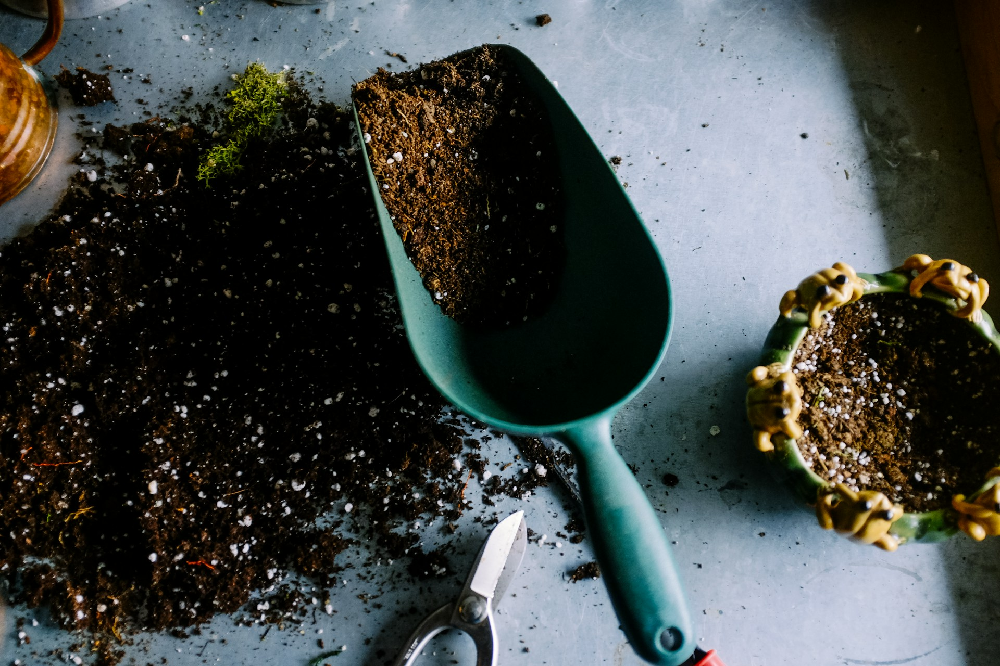
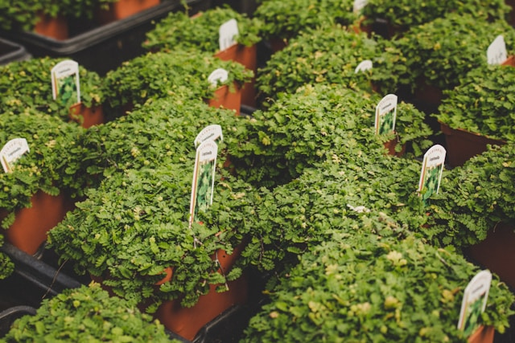
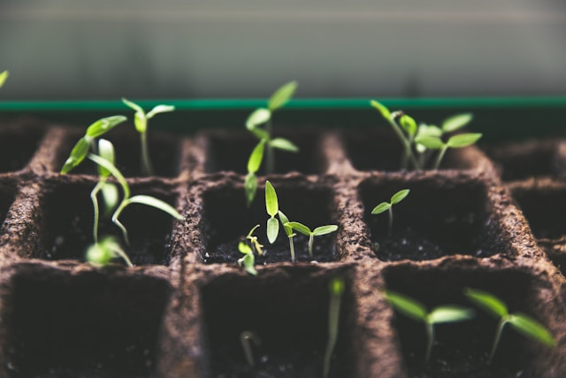
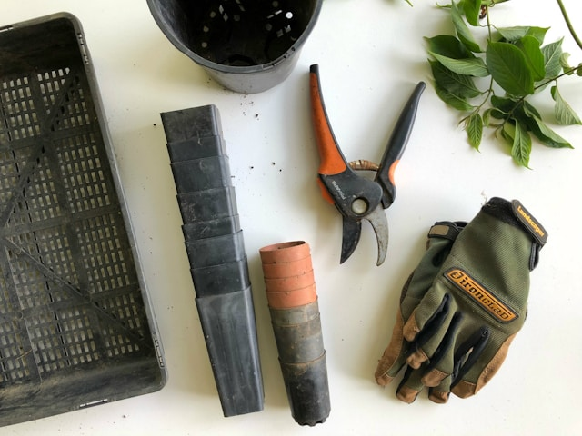

Jardinería
Plantación, césped, setos y cierres vegetales. Ejecutamos el jardín completo o el trabajo puntual que necesites.

Baión · Trabanca Badiña · Pontevedra
Jardinería, paisajismo y mantenimiento en Galicia desde 1994, con vivero propio y un equipo formado para cada trabajo.
Qué hacemos
Todo lo que necesita un jardín, desde la primera idea hasta el mantenimiento de cada temporada.
Plantación, césped, setos y cierres vegetales. Ejecutamos el jardín completo o el trabajo puntual que necesites.
Diseñamos el espacio antes de tocarlo: recorridos, volúmenes, especies y cómo se verá dentro de cinco años.
Siega, poda, desbroce, abonado y limpieza con visitas periódicas. Para particulares, comunidades y empresas.
Planta de temporada, interior y exterior, seleccionada para el clima de las Rías Baixas.
Árboles, plantas ornamentales y frutales, con el consejo de quien sabe dónde y cómo plantarlos.
Sustratos, abonos y productos de nutrición animal para el jardín, la huerta y la finca.
El vivero
No sólo trabajamos en jardines: puedes venir a por la planta, el sustrato o la maceta. En Baión y en Trabanca Badiña encontrarás:



Cómo trabajamos
Vamos a ver el terreno, escuchamos qué quieres y cuánto tiempo tienes para cuidarlo.
Te contamos qué se puede hacer, con qué plantas y a qué precio. Sin compromiso.
Trabaja nuestro equipo, con planta de nuestro vivero y plazos acordados.
Si quieres, seguimos: visitas periódicas para que el jardín siga como el primer día.
Nosotros
Troquiña S.L. es una empresa de servicios creada en 1994 y especializada en jardinería y paisajismo. Desde entonces hemos crecido despacio, como crecen los jardines: aprendiendo qué funciona en este clima y qué no.
Contamos con una plantilla cualificada y formada para cada una de las actividades, y con vivero propio, lo que nos permite elegir la planta antes de plantarla y responder por ella después.
Trabajamos para particulares, comunidades de vecinos y empresas en toda Galicia, con base en la comarca de O Salnés.
Dónde estamos
Consulta el horario actualizado en Google Maps.
Consulta el horario actualizado en Google Maps.
Contacto
Escríbenos o llámanos. Te respondemos con una propuesta y un presupuesto sin compromiso.